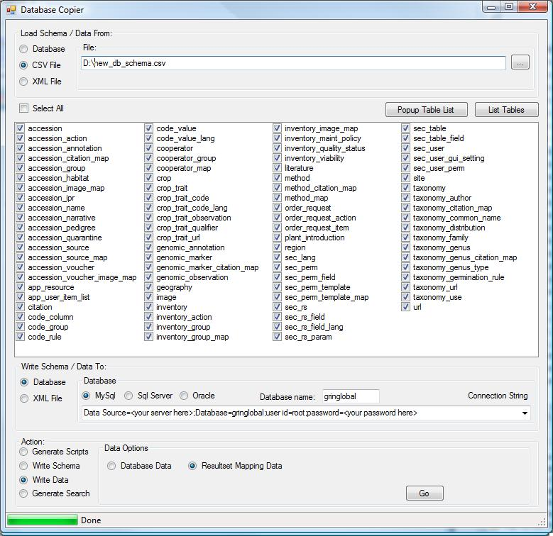

Copy Current GRIN Data
This step consists of 4 parts:
- Copy the schema from
MAIN - Copy the data from
MAIN - Copy the schema from
PROD - Copy the data from
PROD
GrinGlobal.DatabaseCopier tool. It is recommended you do them in the given order for sake of time only.
The MAIN and PROD parts are completely separate and may be performed concurrently on different client workstations to speed up the process if need be.
However, you must point MAIN at a different destination folder than PROD as they will both generate a file named "__schema.xml".
-
Part 1: Copy the Schema from
MAINHere's a screenshot of how the tool should be configured to do this (click the 'List Tables' button after specifying the database connection):

NOTE: Only the following tables are needed, so make sure only the following are checked before clicking 'Go':
CODE_COLUMNCODE_RULECODE_VALUESITESITEUSER
__schema.xml' in the given "Write Schema / Data To:" folder. -
Part 2: Copy the Data from
MAINHere's a screenshot of how the tool should be configured to do this (click the 'List Tables' button after specifying the database connection):

NOTE: The table list is the same as in Part 1. Just the selection of the "Write Data" radio button on the lower left is the only difference.
Clicking 'Go' will create a file for each table checked in the table list in the given "Write Schema / Data To:" folder. This process may take some time. -
Part 3: Copy the Schema from
PRODHere's a screenshot of how the tool should be configured to do this (click the 'List Tables' button after specifying the database connection):

UNCHECK the following tables in the table list before clicking 'Go' (this data is not stored in the new Grin-Global database):
COTIVCSRCSR_ACIDCSR_ACPCSR_COOPCSR_DETAILCSR_INSTCSR_MASTERDEL_LOGEXACCEXMBREXPLEXPRPTFCITGENERAL_CONFIGGENIVGRINWIN_INIGSPIIVMENU_ITEMMENU_NAMENAIVNC7IVNE9IVNPGS_SUM_ITEMNR6IVNSSLIVOPGCIVORIGINPARLIVS9IVSOYIVSQL_OPERATORSSTATSTAXTOIMTAXTOOBSTAXTORCTOBIVW6IV
__schema.xml' in the given "Write Schema / Data To:" folder. -
Part 4: Copy the Data from PROD
Here's a screenshot of how the tool should be configured to do this (click the 'List Tables' button after specifying the database connection):

NOTE: The table list is the same as in Part 3. Just the selection of the "Write Data" radio button on the lower left is the only difference.
Clicking 'Go' will create a file for each table checked in the table list in the given "Write Schema / Data To:" folder. This process may will some time.
Create migration database
In the 'migration' database, ensure the following indexes exist. If they do not, create them -- or migration will take a really long time.
- Index spanning
an.acid,an.idrank - Index on
acit.abbr - Index on
ecit.abbr - Index on
gcit.abbr - Index on
mcit.abbr - Index on
tcit.abbr
Mass Load Current GRIN Data
This step consists of 4 parts:
- Write the tables and indexes from
MAIN's__schema.xmlto MySQL - Write the data from
MAIN's data files to MySQL - Write the tables and indexes from
PROD's__schema.xmlto MySQL - Write the data from
PROD's data files to MySQL
GrinGlobal.DatabaseCopier tool. They must be performed in the given order.
NOTE: Both MAIN and PROD should be pushed into the database named 'migration' in MySQL
-
Part 1: Write the tables and indexes from
MAIN's__schema.xmlto MySQLA screenshot of configuring the
GrinGlobal.DatabaseCopiertool to write only the tables and indexes to the migration database:
This will create all tables and indexes from
MAINin the migration database. DO NOT SELECT EITHER OF THE CONSTRAINTS CHECK BOXES Doing so will cause the data copying portion to fail. -
Part 2: Write the data from
MAIN's data files to MySQLA screenshot of configuring the
GrinGlobal.DatabaseCopiertool to copy the data from MAIN's data files into the migration database:
This will copy all records from
MAIN's data file into the migration database. This may take quite some time. -
Part 3: Write the tables and indexes from
PROD's__schema.xmlto MySQLA screenshot of configuring the
GrinGlobal.DatabaseCopiertool to write only the tables and indexes to the migration database:
This will create all tables and indexes from
PRODin the migration database. DO NOT SELECT EITHER OF THE CONSTRAINTS CHECK BOXES Doing so will cause the data copying portion to fail. -
Part 4: Write the data from
PROD's data files to MySQLA screenshot of configuring the
GrinGlobal.DatabaseCopiertool to copy the data from PROD's data files into the migration database:
This will copy all records from
PROD's data file into the migration database.
Create Missing Auto-Increment Fields
The sql migration script generated by the GrinGlobal.DatabaseCopier tool requires each table to have its primary key be a single integer field that is auto-incremented. Not all tables in the current GRIN schema fit this prerequesite, so we need to add those keys now. A script was not created for this portion because it is difficult to do generically. Some tables have compound primary keys, some have primary keys that are integers but not auto-incremented, etc.
Instead, we give the following list of table/fields that need to be added. Note the existing primary key may need to be disabled for this to work.
Add the following as primary key, int(11) signed auto_increment
ag.agidcd.cdidcg.cgid_int(NOTcg.cgid-- it already exists but is a string and is needed by the migration)cn.cnid_int(NOTcn.cnid-- it already exists but is a string and is needed by the migration)durl.durlidembr.embridgnt.gntidig.igidigm.igmidim.imidipr.iprid_int(NOTipr.iprid-- it already exists but is a string and is needed by the migration)lit.litidmbr.mbridnarr.narr_idped.pedidpt.ptidquar.quaridsmbr.smbridtaut.tautiduses.usesid
Create Migration Indexes
On the MySQL server which will be hosting the new Grin-Global database, create a database named 'gringlobal'.
Create new Grin-Global database
On the MySQL server which will be hosting the new Grin-Global database, create a database named 'gringlobal'.
Create the Migration Script
You will need to use both the GrinGlobal.DatabaseCopier tool and MySQL Query Browser for this step.
We will be using the new_db_schema.csv file to define our new Grin-Global schema and data migration paths for us.
Here's a screenshot of how to configure GrinGlobal.DatabaseCopier tool.
Clicking 'Go' will cause a form to popup which contains the entire migration script.
NOTE: DO NOT RUN THE SCRIPT IN ITS ENTIRETY
We will be working our way down the script piece-by-piece to ensure we do things properly.
Copy out the script contents and save them as a .sql file for future reference.
Create New Tables
Using the Migration Script created earlier, we will now create the tables and indexes needed.
Copy all text between
/*************** Table Definitions *************/and
/********* Insert Key Mapping Data *************/
Paste it into MySQL Query Browser. Make sure MySQL Query Browser is connected to the 'gringlobal' database. Run the script.
Populate Table and Field Mappings
You will need the GrinGlobal.DatabaseCopier tool for this step.
Now we must add data to various sec_* tables. Configure the GrinGlobal.DatabaseCopier tool as shown:

Clicking on 'Go' will write the necessary data to the 'gringlobal' database.
Copy Primary Keys and Data From Current GRIN MySQL Database
Using the Migration Script created earlier, we will now copy all the primary key values and data we need.
Copy all text between
/********* Insert Key Mapping Data *************/and
/******** Converting tables to InnoDB **********/
Paste it into MySQL Query Browser. Make sure MySQL Query Browser is connected to the 'gringlobal' database. Run the script.
Verify Migration
You can verify the migration several ways, but the easiest is to point the GrinGlobal web service at the new database and connect a client to the web service. You can also simply spot-check table data using MySQL Query Browser.
The verification should be done before all the following steps because they are unrelated to the migration of the data. While the following steps are very necessary, they are also very time consuming. So verify your data before continuing.
Change Tables To InnoDB
Using the Migration Script created earlier, we will now alter most tables to use the InnoDB storage engine.
Copy all text between
/******** Converting tables to InnoDB **********/and
/************ Adding Constraints ***************/
Paste it into MySQL Query Browser. Make sure MySQL Query Browser is connected to the 'gringlobal' database. Run the script.
Create Constraints
Using the Migration Script created earlier, we will now create referential constraints.
Copy all text between
/************ Adding Constraints ***************/and
/*********** Migration Table Drops *************/
Paste it into MySQL Query Browser. Make sure MySQL Query Browser is connected to the 'gringlobal' database. Run the script.
Drop Migration Tables
Using the Migration Script created earlier, we will now drop the migration tables (__*) as they are no longer needed.
Copy all text between
/*********** Migration Table Drops *************/and the end of the file
Paste it into MySQL Query Browser. Make sure MySQL Query Browser is connected to the 'gringlobal' database. Run the script.